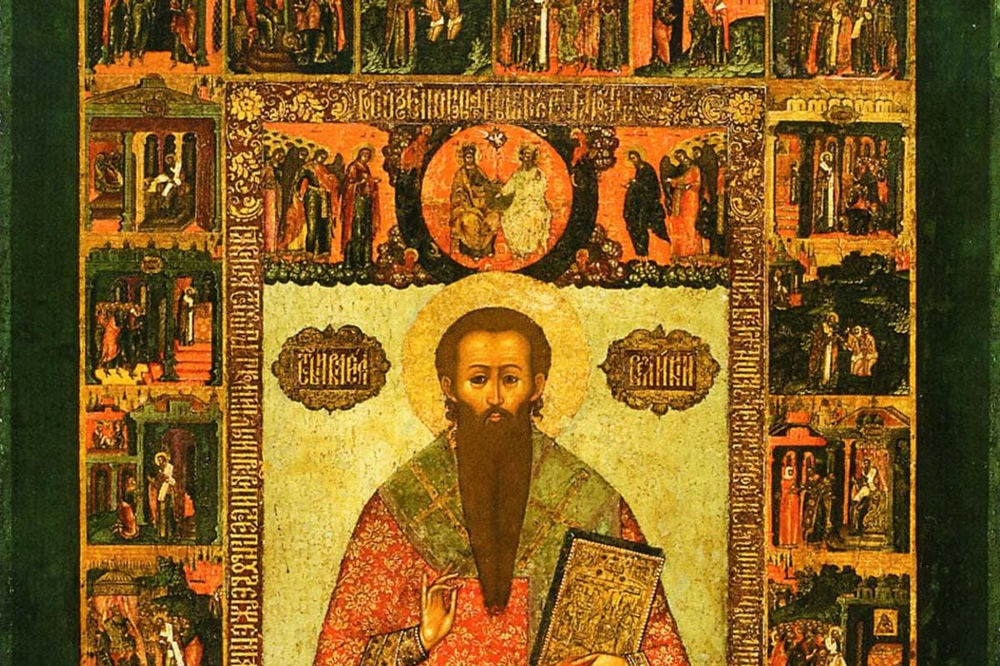

Почему труд обесценили
Мы живём в эпоху, которая обесценила труд. Не любой — а именно труд как таковой. Работать стало «не круто». Круто — зарабатывать, иметь статус, «развиваться», «монетизировать», «масштабироваться». А просто хорошо делать своё дело — это как-то мелко. Не в тренде.
И вот результат. Люди ходят на работу как на каторгу. Отбывают часы. Получают деньги. Уходят. И ждут выходных. И так — десятилетиями. Они не трудятся. Они отбывают наказание.
А самое страшное в этой системе — не усталость. Самое страшное — быть ненужным. Когда телефон не звонит. Когда тебя не ждут. Когда ты не знаешь, зачем ты вообще нужен. Когда твоя роль — просто «присутствие». Это ощущение — хуже любой усталости.
Почему так произошло? Потому что мы заменили труд на «занятость». А это разные вещи. Занятость — это когда ты где-то проводишь время. Труд — когда ты что-то создаёшь, меняешь, помогаешь. Занятость — это про часы. Труд — про вклад.
Но труд — это не проклятие. Это возможность быть нужным, востребованным, полезным. Возможность вносить вклад. Возможность отдавать — и получать через это смысл.
Православная традиция говорит об этом ясно. Климент Александрийский называл труд «школой общественной справедливости». Василий Великий — «побуждением к ещё большим трудам». Иоанн Златоуст — «бесчестием не работу, но праздность». То есть труд — это не кара. Это путь.
Исторический пример: Василий Великий
Василий Великий был архиепископом Кесарийским — человеком огромной ответственности и огромного масштаба. Но он не гнушался простого труда. Он строил больницы, организовывал помощь голодающим, работал руками. Он не считал, что «руководить» — это выше, чем «делать».

Он говорил: «Труд — это побуждение к ещё большим трудам». То есть каждый сделанный шаг открывает следующий. Каждое усилие имеет смысл. Не потому, что за него заплатят. А потому, что оно создаёт.
Василий Великий не делил труд на «престижный» и «непрестижный». Он видел ценность в каждом. Врач, строитель, учитель, организатор — все они делают одно дело: служат людям. И в этом служении — их величие.
Служение: когда труд становится чем-то большим
Есть ещё одно измерение труда, о котором мы почти не говорим. Это служение. Когда ты делаешь что-то не ради себя, не ради денег, не ради статуса — а ради других. Ради чего-то большего.
Служение — это высшая форма труда. Потому что в нём нет «я». Есть «мы». Есть «для кого-то». И в этом — особая сила.
Я знаю это не по книгам. Несколько лет назад мне выпала честь пожить несколько дней в женском монастыре. Это был не туристический визит. Это было погружение в другой ритм, в другую логику. Я видела, как трудятся сёстры. С раннего утра и до позднего вечера. Они готовили, убирали, шили, работали в саду, принимали паломников, пекли хлеб. Без выходных, без отпусков, без «а когда мне за это заплатят».
И я смотрела на них — и не видела усталости. Я видела радость. Тихую, глубокую, спокойную. Они не отбывали. Они служили. Каждое их действие было частью чего-то большего. Каждое движение имело смысл.
Эти несколько дней изменили моё отношение к труду. Я поняла, что значит работать не ради результата, а ради процесса. Не ради «получить», а ради отдать. И это не про монастырь. Это про то, как любой труд может стать служением — если в нём есть любовь.
Что говорит наука
Психологи подтверждают: осмысленный труд связан с благополучием. Не статус, не доход, не должность — а именно ощущение, что то, что ты делаешь, имеет смысл.
Эми Ужесневски и коллеги в исследовании, опубликованном в Journal of Research in Personality, показали: люди по-разному относятся к работе — как к работе (job), карьере (career) или призванию (calling). Те, кто видит в работе призвание, более удовлетворены жизнью и работой — причём независимо от дохода и должности. Важно не что ты делаешь, а как ты к этому относишься.
Другое исследование, опубликованное в Journal of Occupational Health Psychology, показало: вовлечённость в работу важнее внешних бонусов. Сотрудники, которые видят смысл в процессе и результате, работают лучше и дольше остаются в профессии. Деньги важны, но они не создают смысл. Смысл создаёт труд.
Пример из моей практики
В моей практике карьерного психолога это одна из самых частых и самых глубоких тем. Ко мне приходят люди, которые формально «всё делают правильно». Но чувствуют пустоту. Они не знают, зачем они на работе. Они не видят, кому нужно то, что они делают. Они не чувствуют себя нужными.
Один из показательных случаев: клиентка, специалист с 12-летним опытом, руководитель отдела. Хорошая зарплата, стабильность, уважение. Но она говорила: «Я как мебель. Я есть, но меня никто не замечает. Я не знаю, зачем я вообще нужна». Это не про работу. Это про отсутствие роли. Про то, что её труд перестал быть вкладом.
Я понимаю этот страх. И знаю его не понаслышке. Для меня самое страшное — быть никому не нужной. Невостребованной. Я не могу быть ненужной в отношениях. Не могу быть бесполезной в работе. Это не про амбиции. Это про то, что без роли я не чувствую себя живой. И мне кажется, это знакомо каждому нормальному человеку.
В Советском Союзе даже было такое слово — «тунеядец». И хотя звучит оно сегодня с долей иронии, за ним стоит простая мысль: человек должен вносить вклад. Быть частью системы. Работать как частичка огромного организма. Не потому, что «надо». А потому, что без этого нет ощущения себя.
Но выход есть. И он начинается с признания: труд — это ценность. И ты можешь её вернуть. Не через смену работы. Через смену отношения к тому, что ты делаешь.
Что делать, если труд потерял смысл
Речь не о том, чтобы сменить работу. Речь о том, чтобы вернуть ценность тому, что вы делаете.
Признать, что ты нужен
Даже если это не очевидно. Даже если кажется, что тебя никто не замечает. Тот, кто течёт воду, тот, кто убирает, тот, кто чинит, тот, кто лечит, тот, кто учит — все они держат мир. Без них он рухнет.
Увидеть свой вклад
Не «я просто работаю», а «я делаю вот это, и оно меняет вот это». Помог человеку. Создал что-то. Решил проблему. Улучшил день. Это не «мелочи». Это труд.
Превратить работу в служение
Даже если это не монастырь и не благотворительность. Служение — это не место. Это отношение. Когда ты делаешь что-то не ради себя, а ради других. Когда в труде появляется любовь, он перестаёт быть каторгой.
Вернуть целостность
Труд — это не отдельная часть жизни. Это часть тебя. Не «работа» и «я». А «я, который работает». Когда ты соединяешь эти части, труд становится не наказанием, а путём. А о том, как понять, что для тебя действительно важно, — читайте в статье «Ценности как компас: на что опираться, чтобы принимать верные решения».
Вывод
Труд — это не наказание. Это возможность. Быть нужным. Быть полезным. Быть частью чего-то большего.
Если вы сейчас чувствуете, что работа стала каторгой, — возможно, дело не в работе. Дело в том, что вы потеряли связь с тем, зачем вы это делаете. И эту связь можно вернуть. Начать с себя. С признания: я нужен. Моё дело важно. И я не зря здесь.